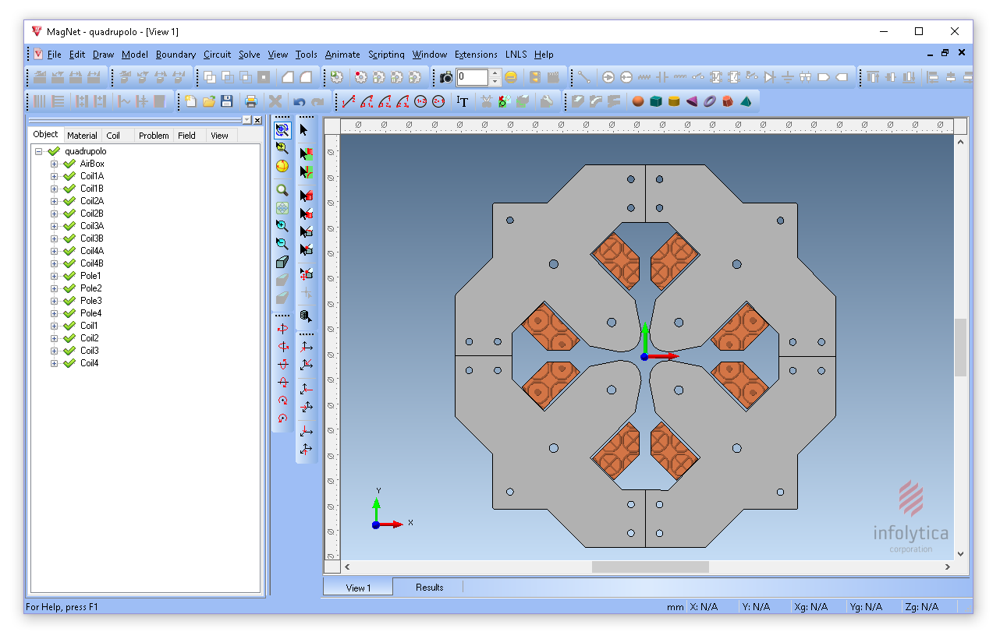
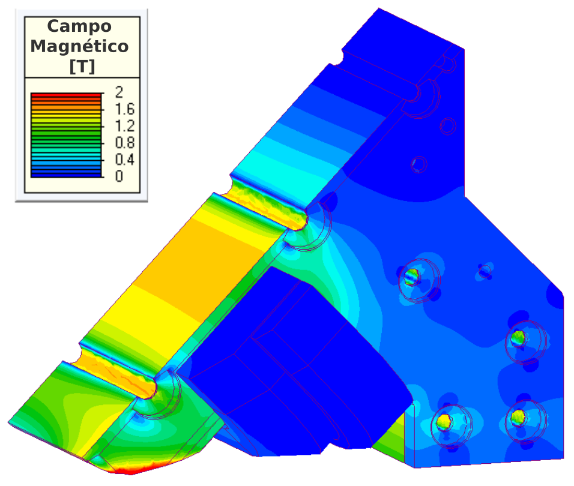

Simulação Magnética 2D 
Várias simulações precisam ser feitas para projetar um ímã que gere o campo magnético desejado.

As primeiras simulações magnéticas são feitas utilizando modelos em 2 dimensões, que são mais simples e ficam prontas rápido. Desta forma mais ideias podem ser testadas para conseguir otimizar o design do ímã!

A maior parte dos ímãs dos Sirius são eletromagnéticos: compostos por um núcleo e bobinas por onde circula uma corrente elétrica. As simulações magnéticas são usadas para determinar o formato do núcleo e o valor da corrente elétrica para cada ímã.

Após a otimização do modelo em 2D, são feitas simulações com modelos mais detalhados em 3D para saber com mais precisão como será o campo magnético real.